One specification
Every crop is grown from the same seed genetics, on farms reporting into the same calendar. Produce from three member farms arrives as one product.



Tanzania Indoor & Professional Farmers Association
One association, one quality standard, one coordinated crop calendar and one point of contact, backed by every member farm in Iringa, Southern Highlands.
Founding member farms
Core high-value crops
Target premium markets
Months of coordinated supply
The opportunity
Premium buyers in East Africa face a hard choice: import from far away at high cost, or take a risk on inconsistent local supply. TIPFA offers a third path.
Individual farmers negotiate alone, limiting the volume and reliability any single buyer can secure.
Without a shared standard, produce quality varies across seasons, farms and even individual harvests.
No single point of contact through which a buyer can plan, order and build a lasting supply partnership.

The third path
Our foundation
Not a co-operative. Not an aid project. A professional association of serious commercial farmers, structured on four pillars that make us a credible partner for premium buyers.
A registered structure with defined governance and full accountability across every member farm.
A single quality standard, working towards full alignment with GlobalG.A.P. and HACCP.
Grown from premium Rijk Zwaan seed, propagated through our own commercial nursery.
A shared crop calendar engineered to deliver premium produce every month of the year.
Our produce
Grown under protected environments, on drip irrigation, from premium Rijk Zwaan seed varieties, to a shared quality standard across every member farm.
 In production
In production
Red, yellow and green. Protected cultivation on drip irrigation.
 In production
In production
High-value chilli grown under protected cover for specialist buyers.
 In production
In production
Greenhouse grown, trellised and graded to a common specification.
 In production
In production
Protected cropping, planned into the shared calendar for continuity.
 In production
In production
Highland grown tree crop, building towards premium and export demand.
 In production
In production
Highland grown, benefiting from Iringa's altitude and cool nights.
 In production
In production
Highland grown and harvested to order for premium buyers.
 In production
In production
Fresh culinary herbs for hospitality and retail channels.
Our founding members
A deliberately small group. A committed foundation. A national network in the making, anchored in and around Iringa, setting the quality benchmark for every farm that joins us ahead.
Cherry tomato · Capsicum
Capsicum · Habanero pepper · Avocado
Organic high-value crops
Broccoli · Cauliflower · Herbs
Cherry tomato · Capsicum
Our standards
Every TIPFA member farm operates to a common quality framework, aligned to international standards, allowing us to speak with one voice to premium buyers.
Working towards GlobalG.A.P. Progressive implementation of the internationally recognised Good Agricultural Practice standard.
Working towards HACCP. A dedicated committee developing our food safety framework across all member farms.
Three-Box Crop Selection. Every crop tested against indoor suitability, harvest timing and market value.
Shared crop calendar. Coordinated planning across all member farms, engineered for reliable year-round supply.

Rijk Zwaan lot recorded at source.
Nursery batch tied to the seed lot.
Farm, house and planting date logged.
Harvest, grade and dispatch recorded.
Anchor technical partner
TIPFA farms grow premium Rijk Zwaan varieties selected for yield, uniformity, shelf life and buyer preference, with ongoing agronomic support extended across every member farm. Variety selection runs through the Association's Three-Box process before adoption.
Engaged with TIPFA on protected cultivation technology, greenhouse systems and crop inputs. Joined the July 2026 delegation to member farms in Iringa.
The Association's own nursery propagates seedlings for member farms, so production begins from identical, healthy planting material.


The concept
Tanzania's premium fresh produce market is growing fast, yet the farmers and investors positioned to serve it remain fragmented and without a route to premium buyers. TIPFA exists on a simple principle: what individual farmers cannot achieve alone, they can achieve together.
A Tanzania in which professional indoor farmers and serious agricultural investors operate within a world class association framework, producing premium crops with confidence, consistency and guaranteed access to the markets they deserve.
To build Tanzania's leading association for indoor and professional farmers, providing members with agronomic excellence, input access, a standards framework and collective market power.
Formal supply agreements with supermarkets, hotels, restaurants and exporters, fulfilled through a centralised crop calendar. The single most important risk mitigation for any grower or investor.
A dedicated support unit guiding crop planning, pest and disease management, irrigation and post harvest handling, anchored by the Rijk Zwaan technical partnership.
Certified seeds, seedlings, crop nutrition, irrigation systems and greenhouse materials at member rates, with priority supply access ahead of general retail.
All produce reaches the market under the TIPFA identity, with standardised grading, packaging and labelling that signals quality and professional provenance.
The crop calendar distributes production risk across the membership, so no single farm carries a buyer's full demand and no single season can break a supply relationship.
Collective GlobalG.A.P. adoption, traceability and aggregated volume build the foundation for EAC export markets, and Middle East markets as the Association matures.
A professional farmer or investor actively operating a qualifying indoor farm or a professional outdoor high value crop farm. The core of TIPFA, with full voting rights, crop calendar participation and market access.
A qualified professional in law, finance, management, marketing, IT or a related field who strengthens the Association's operations, with a structured pathway to full operational membership for those who go on to farm.
An organisation that backs the Association with technical expertise, inputs or services. Rijk Zwaan anchors the founding phase, with SeedCo Vegetables joining at formal establishment.
The founding members first work as a collaborating group under a written Terms of Collaboration: joint input procurement, coordinated agronomic support, aligned planting, shared logistics and a collective market pilot in Dar es Salaam. The model is proven through real transactions.
Once the collaboration has proven itself, the Association is registered under the Societies Act, full governance is constituted, SeedCo Vegetables joins as a second technical partner, and the constitution, standards, crop calendar and offtake agreements are adopted.
Operational members targeted by end of year one
Operational members targeted by year three
Growth phases, from Iringa to EAC export markets
Our geography
Our farms are in Iringa, in the fertile Southern Highlands of Tanzania. From there, our produce reaches the country's leading premium demand centres.
Retail, hospitality and processing demand. First priority in the roll out.
Institutional and government demand.
Hotels and the tourism supply chain.
Tourism, hospitality and northern retail.
Our promise
For premium buyers, TIPFA offers what independent farmers cannot: a single, structured partnership, backed by every one of our member farms.
Held to a shared standard across every member farm, verified by our common quality framework.
Planned through our coordinated crop calendar, so we can commit to volumes and hold to them.
One consolidated relationship, one coordinated delivery, one partnership you can build on.
From premium Rijk Zwaan seed, to seedling, to greenhouse, to your loading bay. Every step recorded.
Joining TIPFA
TIPFA is for growers who farm as a business rather than as a season. From January 2027, the Association opens vetted membership recruitment to professional farmers across Tanzania.
Contact the secretariat by phone, WhatsApp or email.
A visit to review production, records and readiness.
Review against the Association's membership criteria.
Sign the member agreement and enter the crop calendar.
If you grow under a greenhouse or on a structured field, and you are ready to work to one quality standard and one shared crop calendar, TIPFA is your association. Formal registration opens January 2027. Talk to the secretariat on +255 655 555 256.
Looking ahead
The five founding farms are the beginning: deliberately small, deliberately focused, enough to prove the model. From there, TIPFA builds a national network.
Five founding farms operating under a Terms of Collaboration. Shared quality framework and crop calendar established, anchor buyer relationships opened.
Vetted membership opens to professional farmers across Tanzania, assessed against the benchmark the founding farms set.
Expansion across the Southern Highlands. Strengthened supply into Dar es Salaam, Dodoma, Zanzibar and Arusha, with GlobalG.A.P. and HACCP progressing.
A national network of professional growers, aligned to international standards, supplying premium buyers reliably and at scale.
Buyers who partner with us early, grow with us.
Start a conversation
Contact the TIPFA secretariat and we will arrange a farm visit, so you can see the standard for yourself, not just read about it.